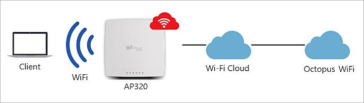
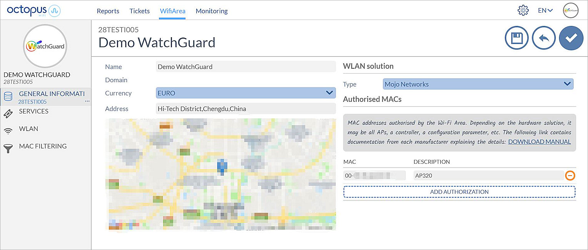
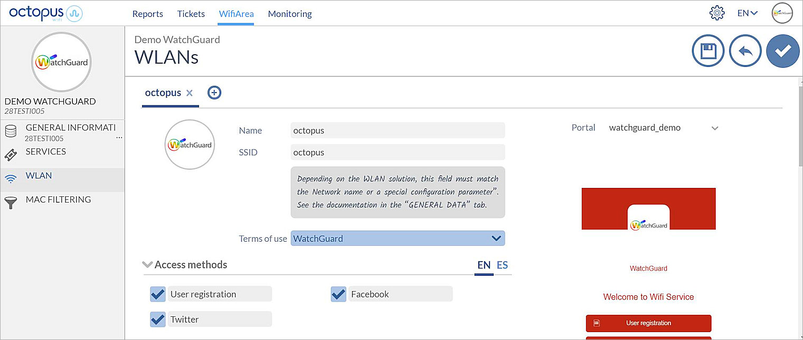

Deployment Overview
This guide demonstrates how to integrate WatchGuard Wi-Fi Cloud with an Octopus WiFi captive portal.
Platform and Software
The hardware and software used to complete the steps in this document include:
- Octopus WiFi:
- Octopus WiFi account
- WatchGuard:
- WatchGuard AP320 version 8.8.0-179
- WatchGuard Wi-Fi Cloud account
Test Topology

Octopus WiFi Configuration
- Log in to the Octopus WiFi Management Portal.
- Select WifiArea.
- Click Edit.
- From the WLAN solution drop-down list, select Mojo Networks.
- In the Authorised MACs section, add the MAC address and a description for your AP.

- Select WLAN.
- Change the WLAN Name and SSID to match your SSID configuration in WatchGuard Wi-Fi Cloud.
In this example, we use the SSID octopus.

- Click to save your settings.
For information on other settings in the Octopus WiFi Captive Portal configuration, please see the Octopus WiFi help documentation.
Configure WatchGuard Wi-Fi Cloud to Integrate with Octopus WiFi
These instructions describe how to configure WatchGuard Wi-Fi Cloud for integration with Octopus WiFi.
For detailed information on WatchGuard Wi-Fi Cloud AP deployment, see the Getting Started Guide.
- Log in to WatchGuard Wi-Fi Cloud.
- Open Discover.
- Select a location where you want to apply the settings.
- Select Configure > WiFi, then select the RADIUS tab.
- Click Add RADIUS Server.

- In the Profile Name text box, type a descriptive name for the profile.
- In the IP Address text box, type the Primary IP address of the Octopus WiFi server used for RADIUS authentication.
- In the Authentication Port text box, use the default port number of 1812.
- In the Accounting Port text box, use the default port number of 1813.
- In the Shared Secret text box, type the shared secret of the Octopus WiFi server used for RADIUS authentication.
- Click Save.
- Repeat these steps for the secondary Octopus WiFi RADIUS server.
- Select Configure > WiFi, then select the SSID tab.
- Click Add SSID.

- Type the Profile Name and SSID name.
- Select the Guest SSID type.
- Select the Security tab, then from the Security Level for Associations drop-down list, select Open.
- Select the Access Control tab, then select the Client Isolation check box.
- Select the Captive Portal tab.

- Select the Captive Portal text box.
- Select Third-Party Hosted from the drop-down list.
- In the Splash Page URL text box, type the URL provided by Octopus WiFi .
- In the Shared Secret text box, type the shared secret provided by Octopus WiFi .
- In the Websites that users can access before login section, add these domains:
- Basic configuration
- app.octopuswifi.com (domain of the Octopus WiFi server)
- google-analytics.com
- doubleclick.net
- Facebook
- facebook.com
- fbcdn.net
- akamaihd.net
- connect.facebook.net
- Twitter
- twitter.com
- twimg.com
- Linkedin
- linkedin.com
- linkedin.com
- licdn.com
- Instagram
- instagram.com
- akamaihd.net
- Google+
- google.com
- gstatic.com
- googleapis.com
- googleusercontent.com
- Captive Portal Apple
- captive.apple.com
- Captive Portal Android
- connectivitycheck.android.com
- connectivitycheck.gstatic.com
- clients3.google.com
- clients.google.com
- Download App Store
- apple.com
- aaplimg.com
- mzstatic.com
- itunes.com
- itunes.apple.com
- icloud.com
- akamaiedge.net
- akamaitechnologies.com
- verisign.net
- verisign.com
- entrust.net
- edgesuite.net
- llnwd.net
- akamaihd.net
- Download Play Store
- akamaihd.net
- ggpht.com
- gvt1.com
- android.clients.google.com
- googleapis.com
- l.google.com
- googleusercontent.com
- play.google.com
- gstatic.com
- Basic configuration
- In the Captive Portal settings, click the RADIUS Settings link.

- From the Primary and Secondary Authentication Server drop-down list, select the RADIUS server you configured for Octopus WiFi.
- From the Primary and Secondary Accounting Server drop-down list, select the RADIUS server you configured for Octopus WiFi.
- In the Called Station ID text box, type %m:%s.
- In the NAS ID text box, type %m:%s.
- Click Save to save the RADIUS settings.
- Click Save to save the SSID Profile.
- Select the Device Settings tab.
- In the Device Password section, type and confirm a password to use for the AP.
This is your AP password and is not related to Octopus WiFi. - Click Save to save your device settings.
The SSID and device settings are now configured for your Wi-Fi Cloud APs in the location you selected.
Test the Octopus WiFi Integration
- Use a wireless client device to connect to Wi-Fi Cloud with the guest SSID you configured.
- Log in using the user registration or social media authentication method.
- After you successfully log in, from the Octopus WiFi management portal, select Monitoring > Connections.
The client's IP address, AP MAC address, and client activity should appear.